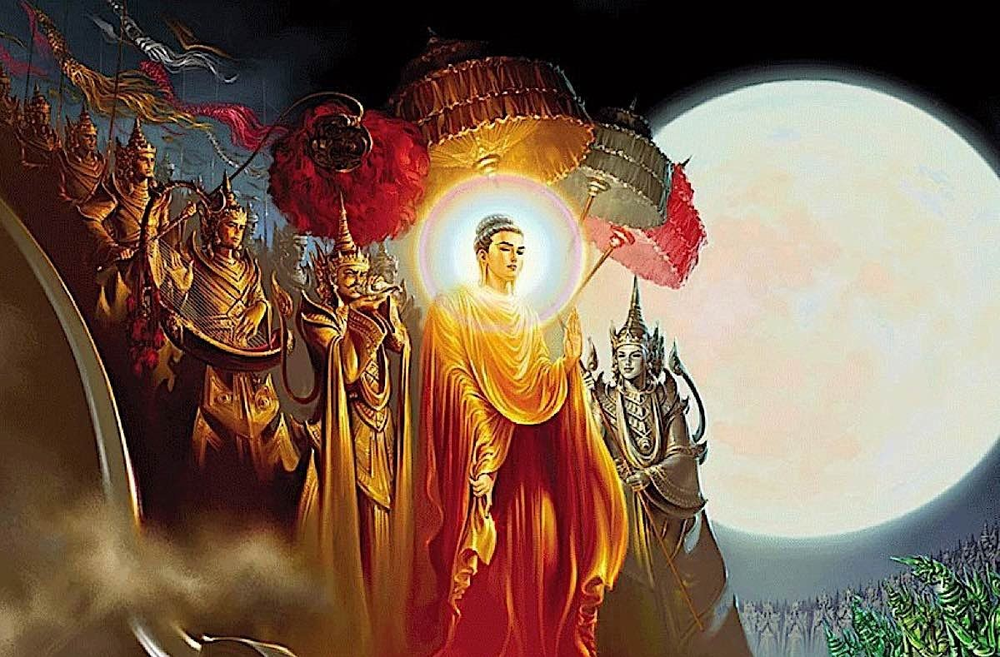
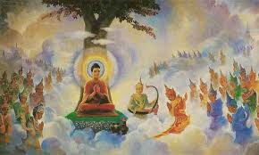
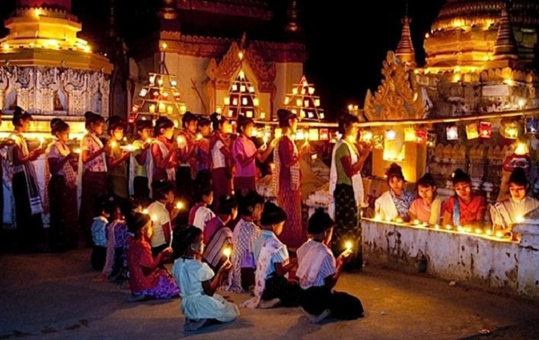

Thadingyut, the festival of lights. It's the second most popular festival in Myanmar. But why do we celebrate it? |
 |
|  | Why did Gautama Buddha go to heaven? |
When Gautama Buddha was descending back to the mortal world, Sakra-devanam-indra ordered all the saints and evils to make three stairways for Gautama Buddha. The three stairways were made of gold, silver and ruby. Gautama Buddha took the middle one, which is made with rubies. The Nats came along on the right stairway, which is made of Gold and the Brahmas came along on the left stairway, which is made of silver. |
 |